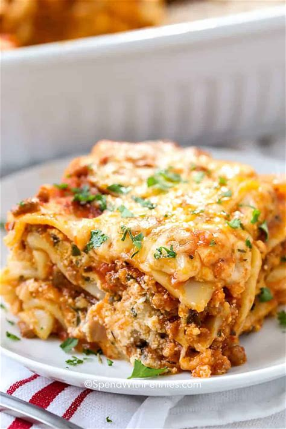

Home
Lasagna

Description
Lasagna is the ultimate comfort food—layered with rich meat sauce, creamy cheese, and tender pasta sheets, all baked to golden perfection. This classic Italian dish brings together bold flavors and satisfying textures in every bite. Whether you're cooking for family or hosting friends, lasagna is a hearty, crowd-pleasing favorite that never goes out of style.
Ingredients
- Lasagna noodles – 12 sheets
- vegies– ½ kg
- Italian sausage– ½ pound
- Yellow onion– 1, chopped
- Garlic – 2 cloves, minced
- Pasta sauce– 36 oz
- Tomato paste– 2 tbsp
- Italian seasoning–1 tsp
- Salt– ¾ tsp
- Ricotta cheese– 2 cups
- Mozzarella cheese– 4 cups (divided)
- Parmesan cheese–½ cup (divided)
- Fresh parsley– ¼ cup, chopped
- Egg– 1
Steps
- Preheat oven to 350°F (175°C)
- Cook the noodles in salted boiling water until al dente. Drain and set aside
-
Prepare the meat sauce:
- Brown ground vegies, sausage, onion, and garlic in a skillet.
- Drain excess fat.
- Stir in pasta sauce, tomato paste, Italian seasoning, salt, and pepper.
- Simmer for 5–10 minutes.
-
Mix the cheese filling:
- In a bowl, combine ricotta, 1½ cups mozzarella, ¼ cup parmesan, parsley, egg, and a pinch of salt.
-
Assemble the lasagna:
- Spread 1 cup meat sauce on the bottom of a 9x13 baking dish.
- Add 3 noodles, then ⅓ of the ricotta mixture, and 1 cup meat sauce.
- Repeat layers twice more.
- Finish with 3 noodles, remaining meat sauce, and top with remaining mozzarella and parmesan.
-
Bake:
- Cover with foil and bake for 45 minutes.
- Remove foil and bake another 15 minutes until bubbly and golden.
-
Rest for 15 minutes before serving.